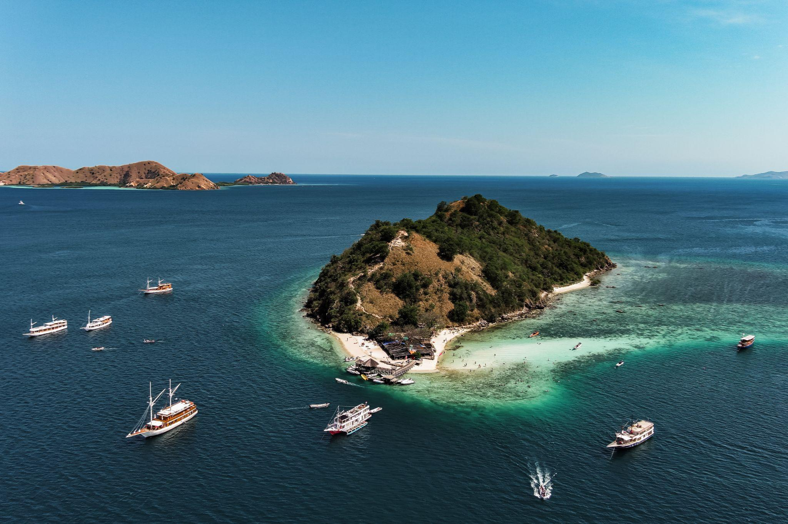

Snorkel crystal-clear shallows & hike to a 360° hilltop vista all with Kapalsantai.
Yes! It’s Tiny, but Mighty
Though Pulau Kelor is uninhabited, yet it’s a magnet for tourists who come to snorkel in crystal-clear shallows, relax on its powdery white beach, paddle kayaks through hidden coves, and hike to its hilltop viewpoint for sweeping vistas. Just a 30-minute boat ride from Labuan Bajo, this little island packs a punch: soft sands, vibrant reef life, and a lookout that frames Komodo National Park’s iconic islets in one stunning panorama. Perfect for a quick day trip, Kelor feels like your own private tropical playground.
3 Little Wonders of Kelor Island
- Baby Shark Nursery Kelor’s calm shallows serve as a nursery for black-tip reef sharks—spend 10 minutes snorkeling to spot pups weaving through coral. Hidden Seagrass Meadows
- At low tide, pale green seagrass beds emerge—keep an eye out for dugong tracks among the blades.
- Natural Photo Frame Photographers love the summit’s ‘rock window,’ which perfectly frames Flores Island peak cove like a living postcard.
Why Kelor Deserves Its Own Slot in Your Itinerary
- Close & Convenient Only 5 km from Labuan Bajo—skip the long crossings and maximize beach time.
- Panoramic Viewpoint A short 15-minute climb rewards you with 360° vistas of neighboring islets and the Flores Sea.
- Pristine Beach & Snorkel White-sand shore meets clear, shallow waters—ideal for spotting baby sharks and colorful reef fish.
3 Must-Do Experiences on Pulau Kelor
- Sunrise Summit
- Start: Aim for a 06:00 drop-off.
- Climb: 200 m trail; 15–20 minutes uphill on sandy switchbacks.
- Reward: Green peaks filled the horizon spilling over emerald seas—and Kelor’s silhouette waking up below.
- Snorkel with Baby Sharks & Reef Life
- Where: Shallow bay on the island’s east side.
- What You’ll See: Juvenile black-tip reef sharks, butterflyfish, and soft coral gardens.
Best Season to Visit
- April–October: Dry season, clear skies, and easy trails.
- November–March: Rainy season, choppier seas, and occasional slippery paths.
What to Pack
- Quick-dry swimwear & rashguard
- Sunscreen & hat
- Snorkel gear (optional; provided on board)
- Water & light snacks
- Dry bag for gadgets
- Towel & change of clothes
Ready for Your Mini-Escape?
Pulau Kelor proves you don’t need days to fall in love with Komodo National Park. Just hop on, explore, and let those hidden-cove vibes work their magic.
Book your day trip now, tag us @Kapalsantai, and share your Kelor highlights—because the best stories start with a single step off the dock!
